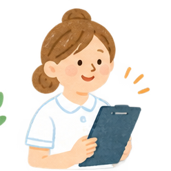
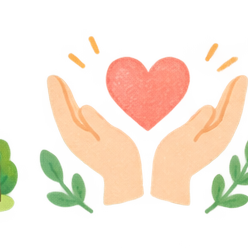

救急車を呼ぶか迷うとき
#7119
長崎県救急安心センター
- 24時間365日
- 全年齢が対象
- 相談無料・通話料は利用者負担
つながらない場合：095-801-1217

方法を知り、探し方を確認して、諫早市内の該当先を見つけられます。
よくある場面から、相談先の目安を紹介します。
電話相談は診断や治療をするものではありません。症状が急に悪化した場合や、命の危険を感じる場合は119番へ連絡してください。
#7119
長崎県救急安心センター
つながらない場合：095-801-1217
#8000
長崎県子ども医療電話相談
家庭での対処や、医療機関を受診するか迷ったときに相談できます。
#8000へ電話する受付時間は公式情報でご確認ください。
診療時間や受付状況は変わることがあります。受診前に、必ず医療機関へ電話で確認してください。
諫早市が案内する、その日の休日当番医を確認します。
諫早市の最新情報を見る ↗診療日、診療科、対応できる治療などから探せます。
医療情報ネットを開く ↗中学生までの内科的な急病に対応。来院前に電話が必要です。
諫早市こども準夜診療センター薬によって対応が異なります。自己判断で量を増減したり、ほかの人へ渡したりせず、薬の説明や薬袋を確認してください。
自己判断で2回分を一度に使わず、薬ごとの指示を確認します。
薬の名前、量、使った時刻を確認し、薬剤師や医療機関へ相談します。
息苦しさ、顔やのどの腫れ、意識の異常があれば119番へ。
市販薬やサプリメントも含め、使用中のものを薬剤師へ伝えます。
この案内は一般的な情報です。個別の薬については、処方した医療機関または薬を受け取った薬局へご相談ください。
食事、体を動かすこと、睡眠、歯と口の健康、健診など、毎日の暮らしに役立つ情報をまとめています。体調や持病に合わせ、無理なく続けられることから始めましょう。
毎日の生活で取り入れやすい健康づくりを確認します。
諫早市の健診・がん検診や、受診後の相談先を案内します。
一人で抱え込まず、地域の専門職へ相談できる窓口を探します。
健康、こころ、高齢者や介護について、諫早市の専門職へ相談できます。

生活習慣病、栄養、禁煙、口の健康などを、保健師や管理栄養士へ相談できます。
地域別の窓口を見る ↗こころの不調、依存症、ひきこもりなどを、本人や家族が相談できます。
相談内容と受付時間を見る ↗
介護、福祉、健康、医療、認知症などを地域包括支援センターへ相談できます。
町名から担当窓口を探す ↗お薬手帳、かかりつけの医療機関、家族の緊急連絡先を確認しておきましょう。持病や使用中の薬も、家族と共有しておくと安心です。
厚生労働省、消防庁、PMDA、長崎県、諫早市などが公表する情報を確認しています。制度や受付時間は変わることがあるため、最新情報は各機関の公式ページでご確認ください。
情報確認日：2026年9月28日